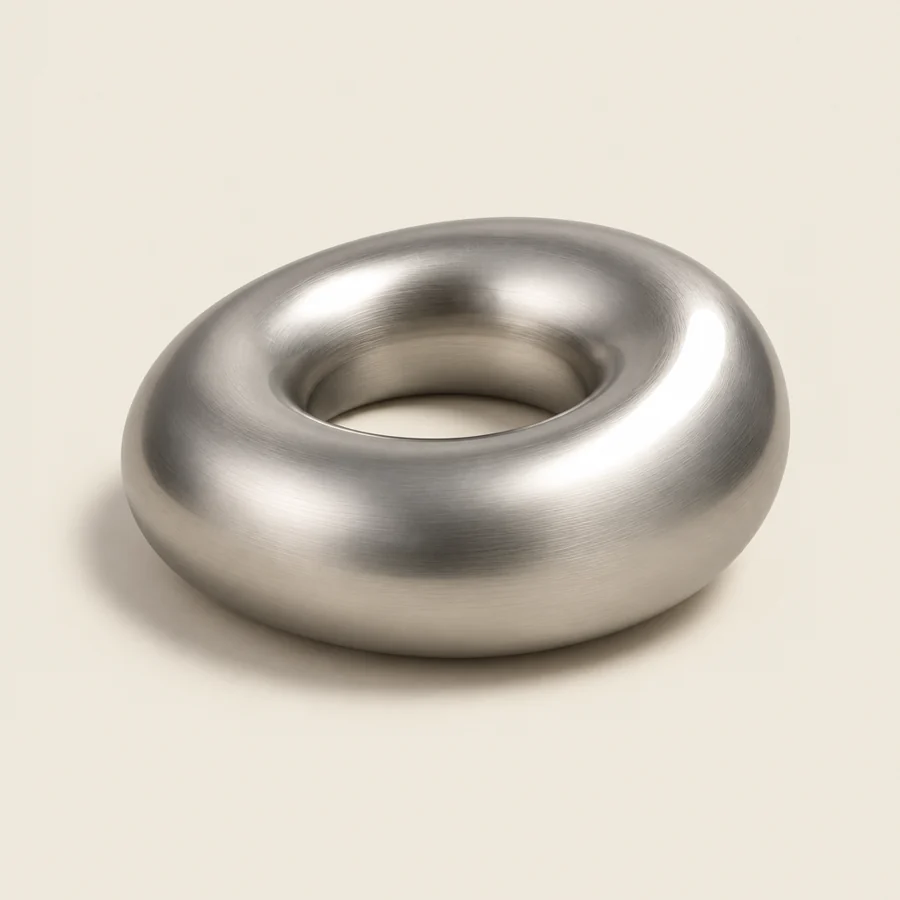
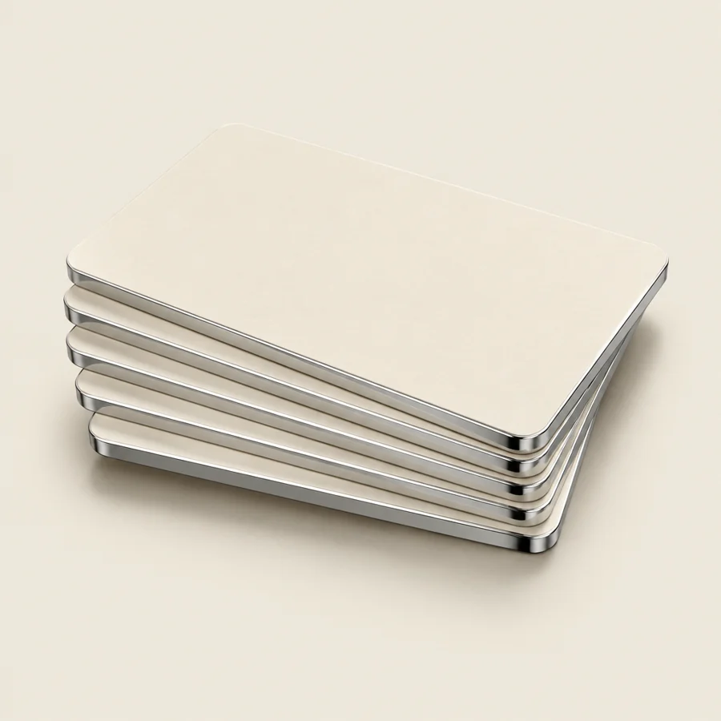
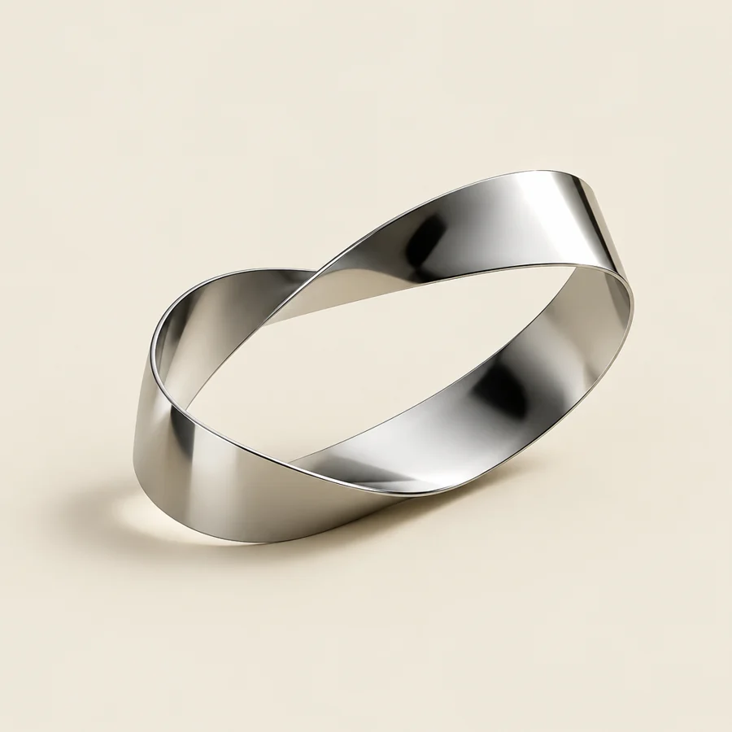

Onboarding · editors and designers
Start
here.
You never install anything. You work inside Higgsfield Supercomputer, which reads the brand folder on Google Drive and our tools from GitHub. Briefs come to you there; finished work goes back to Drive from there.
Watch the walkthrough once. Then the two prompts below are the whole job.
- 01A GitHub accountfree — github.com/signup. You never write code; the tools live there and Supercomputer pulls them for you. Send the owner your username.
- 02A Higgsfield accountsign up at higgsfield.ai (use that link — ours, costs you nothing extra). Supercomputer is where you work. A paid plan; the free tier won't carry a brief.
- 03The brand folder linkone Google Drive link from the owner — it opens for anyone with it, no invitation
- 04This pagethe video, the steps, the prompts — bookmark it
Chapters — 10 of them, 17 minutes
- 00:041 · Connect Google Drive and GitHub inside Higgsfield Supercomputer
- 03:032 · Put the shared brand folders in your own Drive (Organize → Add shortcut)
- 06:213 · Test it — new chat, + → Connectors, ask for the brand folder
- 07:304 · Clone the tools repo (paste the link, say "clone this")
- 09:205 · Get updates — "Pull my GitHub repository and look for updates"
- 11:256 · Where the briefs live — the brand folder in Drive
- 13:377 · The workflow — review, remove slop, reroll, sequence, edit
- 14:508 · Turn the pull into a skill
- 15:359 · Execute a brief — pull up its clips
- 16:3410 · Pull in the AI video production workflows

01 — once
Set up,
ten minutes
Everything happens in Higgsfield Supercomputer. Supercomputer can only see what is in your own Google Drive, so step 3 matters.
Make a GitHub account
Free, two minutes: github.com/signup. This is where the tools live — you don't write code, you just need an account so Supercomputer can pull them for you. Send the owner your username once you have it.
Make a Higgsfield account
Sign up here: higgsfield.ai — use that link, it's ours and costs you nothing extra. Higgsfield Supercomputer is where you actually work: it reads the brief, makes the pictures and the clips, and talks to Drive and GitHub for you. Pick a paid plan — the free tier won't carry a real brief.
Get the brand folder link
One Google Drive link from the owner. No invitation and nothing to be added to — the folder opens for anyone with the link. Keep it; the Day-one prompt takes it.
Connect Drive and GitHub
In Supercomputer: Connectors → Explore → connect Google Drive, then GitHub. Sign in to each when asked.
Video · chapter 1
Put the brand folder in your own Drive
Open the link, then in Google Drive right-click the folder → Organize → Add shortcut → into a folder you make in My Drive. Supercomputer only sees your own Drive.
Video · chapter 2
New chat → + → Connectors
Check Google Drive and GitHub are both ticked for that chat.
Video · chapter 3
Paste the Day-one prompt
With the brand's name and the folder link filled in. It clones the tools, opens the folder, reads the queue and tells you what is open. When it ends with "Set up for <brand> — N briefs open", you are done.
Video · chapters 4–5 · the prompt is below

02 — every session
The loop
One prompt, pasted at the start of every session. It stops and shows you at every decision — you decide, it does the work.
Sync
It pulls the tools for updates and reads the live queue from Drive. Never skipped: a brief made from yesterday's tools is the one that gets sent back.
Pick
The brief you name, or the newest open one. It claims it in briefs/claims/ so nobody else takes it.
Lay it out
Downloads the package and shows you everything: the scenes with their clips and voices (or the image drafts), the intended cut, what is locked, the known issues, the loop.
Video · chapters 6 and 9
Review
Same person, same wardrobe, same product, slop, sound, words, anything odd — one table: KEEP / FIX AT CUT / REROLL. Then three to five ideas inside the brief's own loop.
You decide what gets rerolled · video · chapter 7
The asks
The extras the brief wants — scroll stoppers, headlines, variations, extra scenes, formats, styles — made in Higgsfield from the same cast and product references.
You approve each one
The edit
Video: everything packed into <brief>--edit with a cut sheet; you take it into Premiere or CapCut. Statics: the finals into <brief>--finals.
Deliver
Finished files to briefs/delivered/<brief>/ on Drive, named <brief>--<what>--v1, with a short DELIVERED.md. The queue updates itself within the hour.

03 — the prompts
Two prompts,
that's the job
Type the brand's folder name and paste its Drive link once; the prompts fill them in. Copy, paste into a new Supercomputer chat, go.
Day one
I am a new editor/designer starting on {BRAND}. Set me up, then show me what is waiting. Do these in order and report each one before moving on.
1. CONNECTIONS. Confirm Google Drive and GitHub are both connected in this chat. If either is not, stop and tell me exactly which one, in one line — nothing below works without both.
2. THE TOOLS. Clone https://github.com/daemnapps/outlier (if it is already cloned, pull it so it is current). Then read tools/21-editor-onboarding/SOP.md in full. That file is the way we work; treat it as standing instructions for every session with me from now on.
3. THE BRAND FOLDER. Open this Google Drive folder directly: {FOLDER LINK} — that is the {BRAND} folder. Do not search for it by name. Inside it, open the folder named `briefs`. If the link does not open, tell me in one line; do not look for another folder with the same name.
4. THE QUEUE. Open `briefs/QUEUE.md` in that folder — read it live from Drive, never from memory. Show me the whole table as it stands: every brief, its type, status, who has it, the bounty and the due date.
5. WHAT I DO NEXT. Tell me, in five lines or fewer, what happens each time I sit down to work: I paste the "Pull briefs" prompt from tools/21-editor-onboarding/prompts/, you sync the tools and the queue, we pick a brief, review it, produce the asks, and I deliver into `briefs/delivered/`.
Rules for you, always:
- Never invent a brief, a scene, a product detail or a claim. If it is not in the brief package or the brand folder, say "not in the brief" and ask.
- Never write into a brief's source package. Deliveries go to `briefs/delivered/<brief>/` only.
- When something in Drive or GitHub cannot be reached, say which door failed in one line. Do not work around it silently.
Finish with one line: "Set up for {BRAND} — N briefs open."
Pull briefs
Working session on {BRAND}. Brief: {BRIEF} (or "newest open"). Do these in order; stop and show me at every ⏸.
## 1. SYNC — always first, never skipped
- Pull https://github.com/daemnapps/outlier for updates and say in one line whether anything changed under tools/21-editor-onboarding/ or tools/05-ai-video-production/. If tools/21-editor-onboarding/SOP.md changed, re-read it.
- Open `briefs/QUEUE.md` in the {BRAND} folder on Google Drive. Read it live — not a copy from an earlier chat.
- Show me the open and claimed briefs, newest first: brief · type · status · who · bounty · due.
## 2. PICK
- If I named a brief, use it. Otherwise take the newest brief whose status is `open`.
- Claim it: create a file in `briefs/claims/` named `<brief> — <my name>` (empty is fine). If you cannot create files in Drive, tell me and I will make it.
## 3. GET THE PACKAGE
- Download the brief's package (a zip or a folder — the queue's Package column says which) and unpack it.
- Read the handoff document in full: `EDITOR-PACK.md`, `<brief>-editor-handoff.md`, or the brief `.md` — whichever is there. Read every section; do not skim.
- Lay out the brief for me:
· WHAT THIS IS — two lines.
· THE SCENES — the scene table exactly as the handoff has it, and for each row the clip file, the voice file, and a thumbnail or first frame so I can see it.
· If it is a static brief — every image draft, largest first, with its prompt beside it.
· THE INTENDED SHAPE, WHAT IS LOCKED, KNOWN ISSUES and THE LOOP — verbatim.
· THE ASKS if the handoff has that section; if not, say "no asks section — using the default menu".
⏸ Show me all of this before doing anything else.
## 4. REVIEW — find what is wrong before we make anything
Go scene by scene (or draft by draft) and check every item below. Output one table: scene · verdict (KEEP / FIX AT CUT / REROLL) · what you saw.
- Same person: face, hair, skin, age, body are the same human in every scene they appear in.
- Same wardrobe: what the handoff locks is what is on screen — no swapped tops, no missing jewellery, no long sleeves where bare arms are locked.
- Same product: the real product, the right one, label readable where it plays large, nothing invented printed on it.
- Slop: extra or fused fingers, warped or gibberish text, melting objects, floating props, a hand through a surface, a mouth that does not match the line, a background that changes mid-shot.
- Sound: every spoken scene has its line; no silent stretches; the lip sync holds; no line is missing or doubled against LINE COVERAGE.
- Words: on-screen text spelled right, the offer says only what WHAT IS LOCKED allows, nothing medical, nothing about origin or guarantees that the handoff does not state.
- Odd: anything that made you look twice. Name it plainly.
Then a second short list — IDEAS — three to five ways the piece gets stronger inside its own loop and format: a tighter opener, a beat to hold longer, an insert that pays the loop off harder, a caption that lands the offer. No new claims, no new product facts, no new characters.
⏸ Stop. I decide what gets rerolled and which ideas we take.
## 5. THE ASKS — what the brief needs beyond the base cut
Use THE ASKS from the handoff. If the handoff has none, use this default menu. Make every item here in Higgsfield, from the brief's own cast references and product references (never a fresh text-described person or product), and keep the locked wardrobe, light and skin rule.
- SCROLL STOPPERS — three alternative first-three-seconds, each built from a different hook in the brief's hook set. Same scene 1 setting.
- HEADLINES — five on-screen headline lines for the opener card, each under eight words, each one a line from the brief's own language (the hooks, the loop, the offer). No new claims.
- VARIATIONS — one alternate take of the opening scene and one of the offer scene, same line, different framing.
- EXTRA SCENES — any insert the POST list or KNOWN ISSUES leaves uncovered: generate it as B-roll from the brief's setting and product.
- FORMATS — 9:16 only; we never make 4:5 or 1:1 versions. Two things: a 15-second cutdown map (which scenes survive, in order), and a check of every frame that faces, the product and every word on screen sit inside the centred 4:5 crop — the middle 70% of the frame — because feed placements cut the top and bottom 15% off. Name any scene that fails; that scene gets rerolled with the subject pulled in, not cropped later.
- STYLES — only if the handoff names a style variation. Otherwise skip and say so.
Name every file `<brief>--<ask>--<n>` (for example `kzn03--stopper--2`). Show me each one as it lands, with the prompt used.
⏸ Stop. I approve or reroll.
## 6. HAND IT TO THE EDIT
Everything is cut at 9:16 with the subjects inside the 4:5 window — one master serves every placement. If the brief is a video: put everything into one folder named `<brief>--edit` — the base clips numbered as in the scene table, the voice files, the approved asks, and a `CUT-SHEET.md` written from THE INTENDED SHAPE: scene order, target seconds per segment, where it breathes, the cards and overlays to compose from POST, the captions to burn. I take that folder into Premiere or CapCut.
If the brief is static: the approved drafts and asks, padded to the formats named, in one folder `<brief>--finals`.
## 7. DELIVER
- Upload the finished files to `briefs/delivered/<brief>/` in the {BRAND} folder on Google Drive, named `<brief>--<what>--v1.<ext>`. Never into the source package.
- Write `briefs/delivered/<brief>/DELIVERED.md`: what was delivered, what was rerolled and why, what is still open for the owner to rule on, in that order, plain lines.
- Confirm to me with the Drive path. The queue picks it up from the folder — you do not edit QUEUE.md.
Rules, always:
- Nothing invented. If the brief does not say it, say "not in the brief" and ask.
- Every identity visible in a frame carries its reference. A person or product generated without their reference is a reroll, not a delivery.
- When Drive or GitHub cannot be reached, say which door failed, in one line, and wait.
tools/21-editor-onboarding/prompts/. When they change there, they change here.
04 — the queue
What is waiting
briefs/QUEUE.md in each brand folder on Drive. One row per brief: type, status,
who, bounty, due, package. Rebuilt every hour from the folder — nobody edits it by hand.
| Status | It means | Because |
|---|---|---|
| open | Nobody has it | The package is in the folder |
| claimed | Someone is on it | A file named <brief> — <name> is in briefs/claims/ |
| delivered | Finished, waiting on the owner | Files are in briefs/delivered/<brief>/ |
| approved · paid | The owner's call | Set by the owner, never by the folder |

05 — the asks
Beyond the base cut
Every brief ends with THE ASKS — six lines, each specified or refused with a reason. Older briefs without the section get this default menu. Every ask keeps the same cast references, product references and wardrobe locks as the base set. No new claims, ever. One ratio: 9:16, with everything that matters inside the 4:5 crop.
Alternative first three seconds, one per hook the brief did not use as the opener.
Opener-card lines under eight words, from the brief's own hooks, loop and offer.
Alternate takes, same line, different framing: the opening and the offer scene.
Inserts for any beat the post list or known issues leave uncovered.
9:16 only — nothing at 4:5 or 1:1. A 15-second cutdown map, and every face, product and word inside the centred 4:5 crop.
A visual restyle of the same film — only when the brief names one.
06 — the rules that never move
- Nothing inventedNot a product detail, not a claim, not a person. If the brief does not say it, the answer is "not in the brief" — ask.
- Every face and product carries its referenceA person or product generated without their reference is a reroll, not a delivery.
- Never write into the source packageDeliveries go to
delivered/. The package stays as it arrived. - Sync first, every sessionStale tools or a stale queue are how a brief gets sent back.
- When a door fails, say which oneDrive, GitHub, Higgsfield — one line. Never a silent workaround.
07 — when it goes wrong
- "Something went wrong" opening the brand folderSupercomputer picked the wrong folder or cached an old one. Paste the folder's Drive link directly into the chat.
- No credits · "no chats"You are in the wrong Higgsfield workspace. Switch to the shared one (top-left) and refresh.
- It found the wrong briefs folderTwo folders share the name. Give it the path or the link — it must not guess.
- A delivered brief still shows openThe files are not in
delivered/<brief>/under the exact brief name from the queue. - "No updates" but the way of working changedThe clone is stale. Say: clone https://github.com/daemnapps/outlier again, fresh.